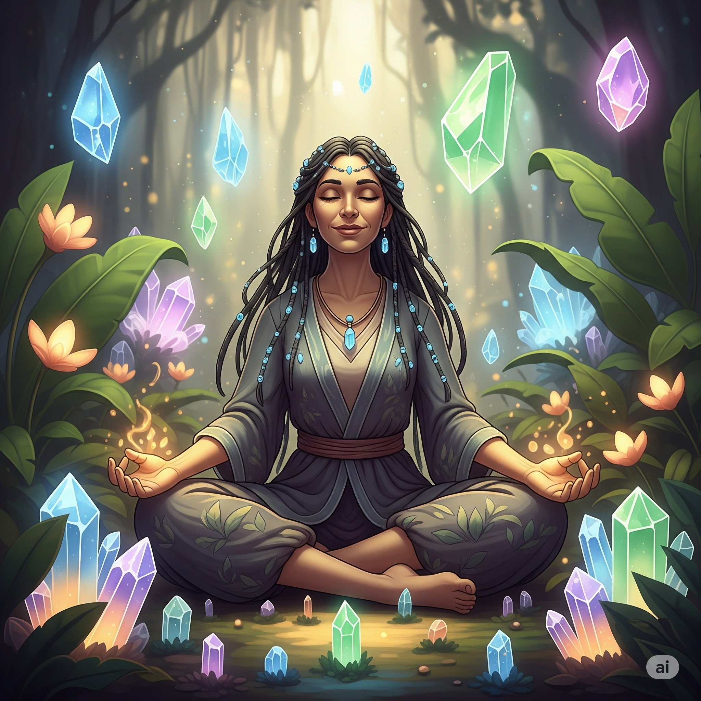

HighVibeHealer, 34
"Good energy only—feet on the ground, heart in the sky."
Serene, ritual-loving, and deeply spiritual. I meditate, moon-bathe, and keep a crystal next to my coffee. I believe in alignment—and I’m learning that accountability is a sacred practice, too.
Favorite Movie: Arrival
Fictional Character: Iroh (Avatar: The Last Airbender)
Interests: Breathwork, sound baths, plant care, nature walks, tea ceremonies
Blind Spot: Spiritual bypassing when emotions feel heavy
Labels conflict as “low vibe” to avoid repair or hard conversations
Preference for calm can invalidate partners’ messy feelings
Grounded routines, reflective, growth-oriented
Spiritual tools help regulate—but they can’t replace repair or responsibility.
Attachment Style Insight: Avoidant with secure skills
Attachment Style Insight: Avoidant with secure skills
Reflection Questions:
- Do you ever “zen” your way around conflict instead of through it?
- What does spiritually aligned accountability look like to you?